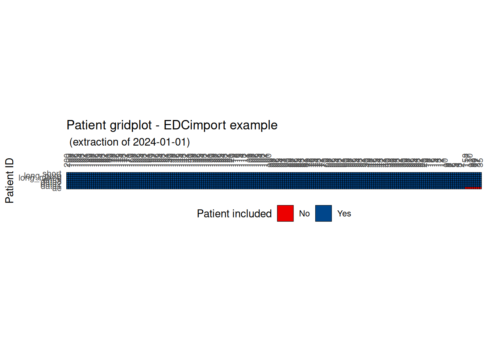

library(EDCimport)
library(dplyr)
db = edc_example(N=200) %>%
edc_unify_subjid() %>%
edc_clean_names()
db
#> ── EDCimport database ──────────────────────────────────────────────────────────
load_database(db)Introduction
You imported your database, but now you might want to visualize some part of it.
There are a lot of ways to do so, so EDCimport provides functions for a few concepts.
As in previous vignettes, we will be using edc_example(), but in the real world you should use EDC reading functions. See vignette("reading") to see how.
Swimmer plot
Each patient experiences a series of events during their visits, recorded in Date/Datetime columns across your datasets.
A simple and effective method to identify errors and inconsistencies is to create a swimmerplot of these columns. This visualization helps to quickly spot incorrect sequences, data entry errors, or unexpected time gaps.
For example, you can check that no experimental treatment was administered before enrollment and that the latest recorded date appears in the follow-up dataset.
edc_swimmerplot(origin="enrol$enrol_date")A convenient way to perform these checks is by using the interactive plot with plotly=TRUE. Although it cannot be displayed within a vignette, the output can be saved as a standalone HTML file for easy sharing.
sp = edc_swimmerplot(plotly=TRUE)
sp
save_plotly(sp, "swimmerplot.html")CRF completion plot
Using edc_crf_plot(), you can generate a barplot showing the distribution of CRF status (Complete, Incomplete, …) for each dataset of the database.

Patient gridplot
Using edc_patient_gridplot(), you can visualize which patients are included in each dataset and identify any problematic missing records.

Population plot
With edc_population_plot(), you can visualize the different analysis populations. Here, we use setdiff() to exclude patients from the various populations, but in real-world data you should probably use dplyr::filter().
# Total population: all screened patients
pop_total <- c(1:100) %>% setdiff(12) #Software error, SUBJID attributed twice
# ITT (Intent-to-Treat): All randomized patients (excluding screening failures only)
pop_itt <- pop_total %>% setdiff(55)
# mITT (Modified ITT): All treated patients
pop_m_itt <- pop_itt %>% setdiff(68) #Patient 68 randomized but never received treatment
# PP (Per-Protocol): Patients who completed treatment without major protocol deviations
pop_pp <- pop_m_itt %>% setdiff(c(33, 79)) #Major deviations
# Safety: All patients who received at least one dose of treatment
pop_safety <- pop_itt %>% setdiff(68) #Same as mITT
# Evaluable: Patients who completed required assessments for primary endpoint
pop_evaluable <- pop_itt %>% setdiff(c(44, 91)) #No primary endpoint assessment
l = list(
"Total population"=pop_total,
"ITT population"=pop_itt,
"mITT population"=pop_m_itt,
"PP population"=pop_pp,
"Safety population"=pop_safety,
"Evaluable population"=pop_evaluable
)
edc_population_plot(l[-1], ref=pop_total)